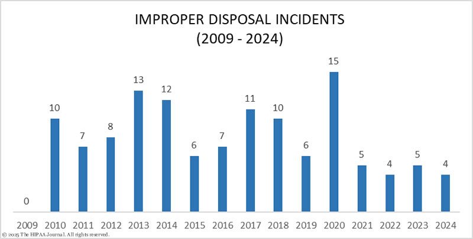

Information Security Statistics
Data Breaches in Healthcare
In 2024 there was 13 healthcare data breaches. It involved more than 1 million healthcare records, and an estimated of 100 million affected individuals.
Hacking was the top cause of data breaches in healthcare, rising since 2018. Before digitalization, loss/theft was the biggest cause of data breaches.
Unauthorized access/disclosures are incidents such as employee errors, negligence, snooping on medical records, and data theft by malicious insiders. Better HIPAA and security awareness training are helping to reduce these data breaches.
Loss or theft of PHI has dropped significantly since the adaptation of electronic health records. Safeguards such as encryptions and backups help prevent the loss of medical records, many of the incidents reported involve paper records.
Improper disposal breaches are infrequent since paper records are no longer sent for shredding.

Note
All charts and data are sourced and obtained on The HIPAA Journal